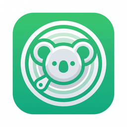

Diskoala 磁盘考拉安全释放磁盘空间的清理顾问
选择要扫描的目录，Diskoala 会按风险分级给出清理建议；删除默认进回收站
已扫描 0 个目录 / 0 个文件
已用时 00:00
全盘扫描可能需要数分钟，请稍候
扫描根目录
0
可清理空间
0
需确认空间
0
| 名称 | 大小 ▼ | 风险 | 分类 | 修改时间 |
|---|
目录占比（按大小）
点击矩形定位列表，双击可展开目录
项目详情
| 名称 | 大小 | 风险 |
|---|
以下提示词已包含本次扫描摘要（JSON）。点击「复制全部」后粘贴到任意 AI 对话（ChatGPT / Claude / Gemini / Codex 等）即可获得磁盘清理诊断。Scai 不会调用任何 AI 服务。
安全承诺：删除默认移到回收站（可恢复）；永久删除需两步确认；系统高风险项始终锁定；每次操作记录审计日志。
最近 200 条清理记录（新→旧）。回收站条目可从系统回收站恢复。
| 时间 | 方式 | 大小 | 路径 | 结果 |
|---|